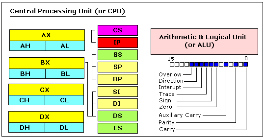

本教程是为从未接触过汇编语言的或者略知一二的朋友编写的。
当然，如果你有其他语言基础(Basic, C/C++, Pascal...) 更
好。但是，即使你熟悉汇编语言，最好也将本文通读以便熟悉
Emu8086 标记。
这里假定您已经掌握了关于数制的知识（十六进制／二进制），
如果目前还没有，在进行下面内容之前，请参考上一章节 进制。
什么是汇编语言？
汇编语言是底层编程语言。为了学习这门语言，你需要对于
计算机结构有所了解。计算机系统模型如下：

系统总线 system bus（图中黄色部分）是将计算机各个
部分连接到一起的部件。
CPU是计算机的心脏，大部分的运算都是在CPU中完成的。
RAM是读取并且存放将要执行的程序的地方。
CPU内部

通用寄存器
8086CPU有8个通用寄存器，每一个寄存器都有自己的名称：
- AX 累加寄存器 accumulator register（分为 AH / AL）.
- BX 基址寄存器 base address register （分为 BH / BL）.
- CX 计数寄存器 count register（分为 CH / CL ）.
- DX 数据寄存器 data register （分为 DH / DL）.
- SI 源变址寄存器 source index register.
- DI 目的变址寄存器 destination index register.
- BP 基址指针寄存器 base pointer.
- SP 堆栈寄存器 stack pointer.
的是保存数值（变量）。上面提到的寄存器是16位的，意思是:
0011000000111001b （二进制），或者12345
(十进制形式)。
4个通用寄存器(AX, BX, CX, DX) 在使用时分为两个8位
寄存器，例如 假设AX= 0011000000111001b，
AH=00110000b AL=00111001b。当你修改其中任
意8位值，整个16位寄存器的值同样改变。同样对于其他的3
个寄存器，“H”表示高8位，“L”表示低8位。
寄存器在CPU内部，访问中它们速度远远超过内存。因为，
访问内存需要经过系统总线，所以时间要长一些。而访问
寄存器中的数据几乎不需要时间。于是，编程中，应当尽量
在寄存器中保存数据。虽然寄存器很小，并且这些寄存器都
有具体用途，但他们依然是存放计算中临时数据的好地方。
段寄存器
- CS 代码段寄存器，用来存放当前正在运行的指令
- DS 数据段寄存器，用来存放当前运行程序所用的数据
- ES 附加段寄存器，由程序员决定用途
- SS 堆栈段寄存器，指出堆栈所在区域
一个好主意。段寄存器有着非常特别的目的－－指出
可以访问内存块的地址。
段寄存器与通用寄存器协同工作就可以访问任意的内存
区域。例如，如果我们打算访问物理地址是12345h
（十六进制）的内存单元，我们应设置DS = 1230h
SI = 0045h 这样以来，我们便能访问超过一个寄存器
（16位）所能表示的内存地址的范围。CPU计算物理地址
的方法是将段寄存器乘以10H在加上一个特定的通用
寄存器。(1230h * 10h + 45h = 12345h):

这种，由两个寄存器生成的地址被称为有效地址
（effective address）
默认下，BX, SI 及 DI 与 DS协同工作，BP SP
与 SS 寄存器协同工作。
其余的通用寄存器不能形成有效地址！同样，尽管
BX可以形成有效地址，但是BH BL不能！
控制寄存
- IP 指令指针寄存器 instruction pointer
- Flags Register 状态标志寄存器
IP 始终同CS 协同工作，指出当前执行的指令。
Flags Register 完成一次数学运算后，由CPU自动
修改，通过它可以得到当前结果类型，也可以作为跳转
语句条件。通常你无法直接访问它们。